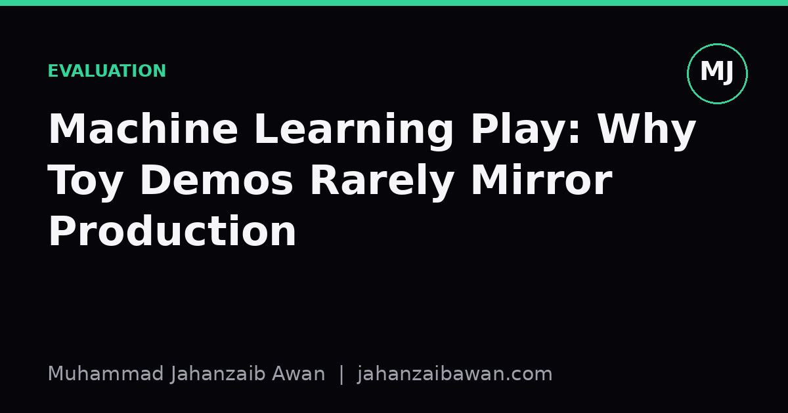

Machine Learning Play: Why Toy Demos Rarely Mirror Production
A tidy notebook that classifies flowers in thirty lines tells you almost nothing about the mess, drift, and decisions that define real deployed systems.

The comfortable lie of the clean dataset
Most tutorials start the same way: load a tidy CSV, split it, train a model, report an accuracy figure, and declare victory. The dataset has no missing values, no duplicated rows, no label noise, and crucially, it was collected once and never changes again. That is not what data looks like in a real system. In production, data arrives continuously, from multiple sources, with schemas that quietly shift and labels that are sometimes wrong, sometimes delayed, and occasionally absent entirely.
Consider a demo that predicts whether a customer will churn using a classic tabular dataset. You get ninety two percent accuracy with a random forest in fifteen lines of code. That number feels like proof of skill, but it rests on an assumption that rarely survives contact with reality: that the rows are independent and identically distributed, and that the future will resemble the past. In production, churn labels often depend on a window of time that has not fully elapsed yet, so some of your training examples are effectively from the future relative to when a real model would need to make a decision. That is a form of leakage, and it is invisible in a notebook where the whole dataset is handed to you as a fait accompli.
The deeper issue is that toy demos optimise for a single, static metric computed once. Production systems are judged by how a metric behaves over months, across changing user populations, under adversarial pressure, and when the upstream data pipeline silently breaks. A model that scores well on a frozen test set says nothing about whether it will still be useful in six months, because nobody ever asks that question of a Kaggle-style notebook.
Splits, leakage, and the illusion of generalisation
Here is a concrete worked example. Suppose you are building a model to flag fraudulent transactions, and your dataset spans eighteen months. A naive random train test split, where eighty percent of rows go to training and twenty percent to testing regardless of date, will scatter transactions from the same merchant, the same device fingerprint, or the same customer across both sets. The model does not need to learn general fraud patterns; it can partially memorise merchant identifiers or device quirks that happen to repeat between train and test. Your reported recall might be eighty five percent, but deployed on genuinely unseen future transactions, it drops to sixty percent because the leakage artificially inflated the test score.
The fix is a time-based split: train on the first fourteen months, validate on the next two, and test on the final two, with nothing from later periods touching earlier folds. This is less flattering. Your eighty five percent recall might become seventy two percent once leakage is removed, and that is the real number, the one that reflects what will happen when the model meets transactions it has never conceptually seen before. Most public tutorials never do this, because a time-aware split is more code, requires understanding the domain's temporal structure, and often produces a less impressive headline figure.
Leakage is not limited to time. Group leakage happens when multiple rows belong to the same underlying entity, such as repeated measurements from the same patient or multiple images of the same object from slightly different angles. If the entity appears in both train and test, the model can learn entity-specific shortcuts rather than genuinely generalisable features. A rigorous split groups by entity, not by row, even though this reduces the apparent size of your test set and often reduces your score. Lower but honest beats high but fictional, every time, because production does not care about your validation leaderboard.

What a demo never has to deal with
A notebook demo never has to handle a schema change upstream. Imagine a recommendation system where a product team silently renames a currency field from a float in pounds to a string formatted with a currency symbol. In a notebook, this never happens because the data is static. In production, this kind of change can silently corrupt a feature pipeline for days before anyone notices, because the model still runs, it just runs on garbage, and nothing crashes loudly. Detecting this requires monitoring: tracking feature distributions over time, alerting when a feature's mean or missing rate shifts beyond an expected range, and having a rollback plan.
Latency and cost are equally absent from toy demos. A model that takes four hundred milliseconds to score one row in a notebook is fine because you run it once. In production, if that model sits in the critical path of a web request serving thousands of users per second, four hundred milliseconds per inference is an outage waiting to happen. Production work involves trade-offs between model complexity and inference speed that a demo never has to consider, because a demo is judged purely on offline accuracy with no service level agreement attached.
There is also the question of what happens when the model is wrong. A toy classifier that mislabels a handful of test images has no consequence beyond a slightly lower accuracy score. A production model that wrongly denies a loan application, flags a legitimate transaction as fraud, or misroutes a support ticket has a human and often a financial cost attached to every false positive and false negative. This forces real teams to think about calibrated thresholds, asymmetric costs, human review queues for uncertain cases, and audit trails explaining why a decision was made, none of which appear in a demo optimised purely for a leaderboard score.
The practical takeaway
None of this means toy demos are worthless. They are genuinely useful for learning an algorithm's mechanics, for quickly sanity-checking an idea, and for teaching intuition about how a model behaves on clean data. The mistake is treating a demo's reported metric as evidence of production readiness. It rarely is, because the demo was never exposed to leakage checks, temporal drift, schema fragility, latency constraints, or the cost of being wrong.
If you want a single habit that closes most of this gap, it is this: before trusting any reported number, ask how the split was constructed and whether it respects the real-world boundaries your deployed model will face, whether that is time, entity, geography, or some other grouping. Ask what happens to that number a month after deployment, not just on the day it was computed. That single question, asked consistently, will do more for your practical judgement than any number of flashy notebook demos ever could.